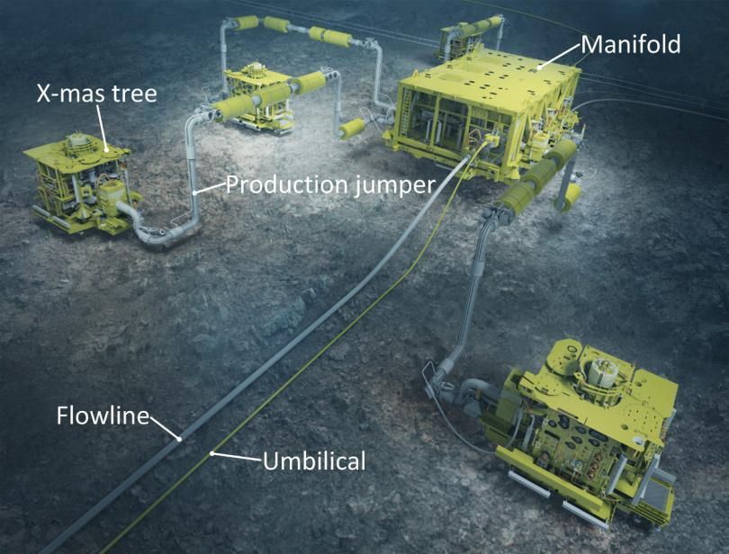

Manifold
1. Introduction
A subsea manifold is an essential component in offshore oil and gas production, designed to direct and control the flow of hydrocarbons from multiple subsea wells to a processing facility. It optimizes production, enhances field development, and supports flow assurance strategies.

2. Components of a Subsea Manifold
- Valves: Control the flow of oil, gas, and water.
- Piping and Headers: Distribute fluids from multiple wells.
- Flow Meters: Measure production rates and detect anomalies.
- Control Modules: Enable remote operation and monitoring.
- Connection Points: Interface with subsea flowlines and umbilicals.
3. Types of Subsea Manifolds
- Production Manifold: Gathers hydrocarbons from multiple wells and directs them to the surface.
- Injection Manifold: Distributes gas or water injection for enhanced oil recovery (EOR).
- Test Manifold: Allows selective well testing to assess individual well performance.
- Distribution Manifold: Regulates chemicals and hydraulic fluids to various subsea components.
4. Functions of a Subsea Manifold
- Production Optimization: Efficiently manages flow from multiple wells.
- Pressure Balancing: Maintains stability in the production system.
- Flow Assurance: Prevents blockages due to hydrate formation and wax deposition.
- Remote Operation: Enables automated control through subsea control modules.
- Improved Field Development: Reduces the need for individual pipelines, lowering costs.
5. Installation and Maintenance
- Subsea Engineering Design: Tailored to specific field requirements.
- Installation via Vessels and ROVs: Ensuring precise placement on the seabed.
- Integration with Subsea Systems: Connecting to flowlines, umbilicals, and control networks.
- Routine Inspections and Interventions: Conducted using remotely operated vehicles (ROVs) and advanced monitoring systems.
6. Challenges and Considerations
- Harsh Deepwater Conditions: Requires robust materials to withstand extreme pressure and temperature.
- Flow Assurance Issues: Addressing hydrate, wax, and asphaltene formation.
- Remote Accessibility: Limits direct human intervention, increasing reliance on automation.
- Corrosion and Structural Integrity: Essential for long-term reliability.
7. Conclusion
Subsea manifolds play a vital role in offshore hydrocarbon production by enhancing efficiency, reducing infrastructure costs, and enabling remote operations. Advancements in subsea technology continue to improve their performance, reliability, and adaptability for future deepwater developments.